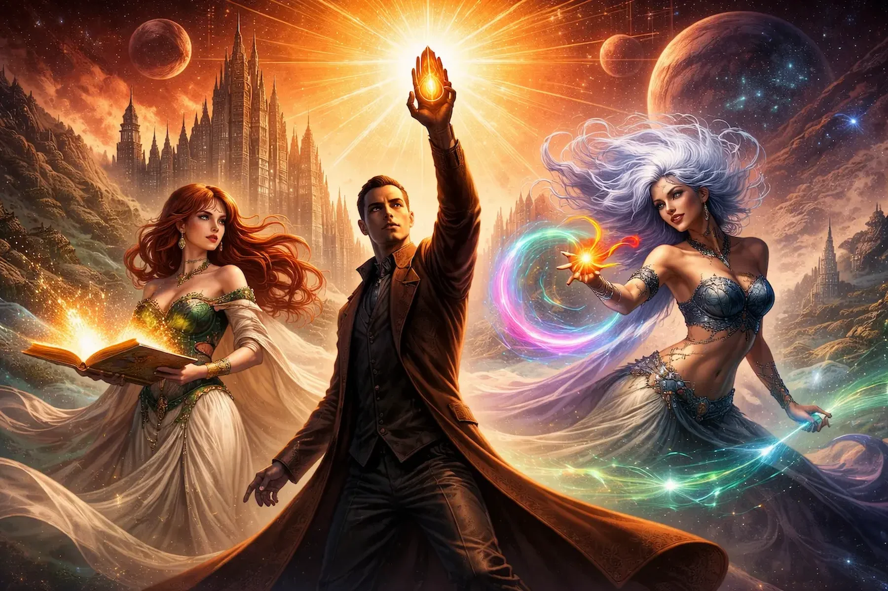

Explore the Cosmere with confidence
Cosmere Companion is a reader-friendly guide to Brandon Sanderson’s connected fantasy universe. It helps new readers decide where to begin and gives existing fans a simple way to compare books, worlds, and magic systems.
About the Site
The Cosmere includes multiple series that take place on different worlds but still connect as part of one larger universe. That makes it exciting, but it can also be confusing to understand how the books fit together.
This site helps readers compare major entry points, learn which worlds belong to which stories, and find a starting point based on their interests.
How the worlds and books relate
Each major Cosmere story happens on its own world with a distinct magic system. This overview helps readers see those connections more clearly.
Featured Books
These featured entries highlight a few strong starting points and well-known stories from across the Cosmere.
Reading Guide
Choose the kind of story you want, and the site will suggest a strong place to begin.
Your Recommendation
Select an option to see a suggested starting point.